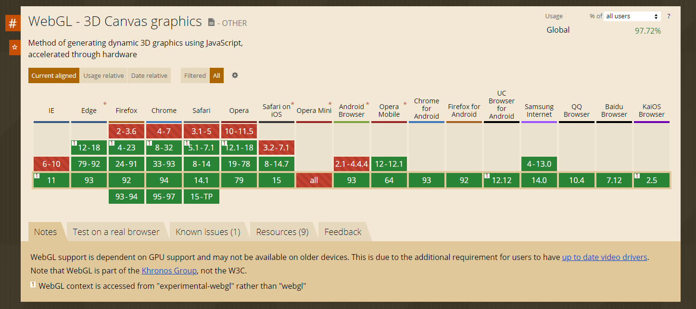
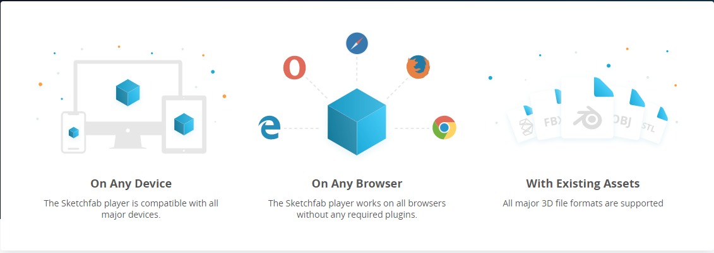
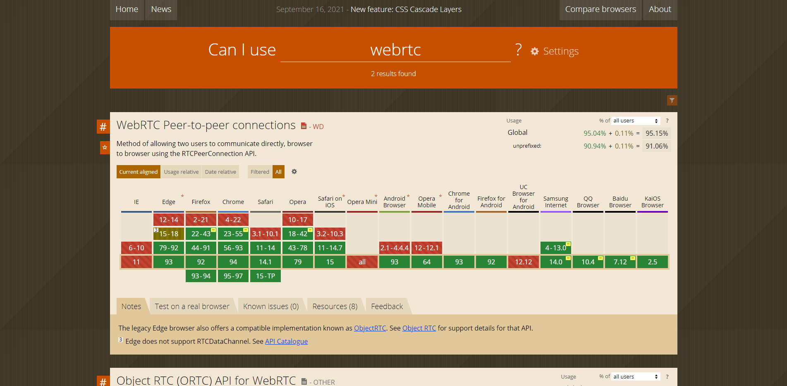

網站互動3D模型 比較表
- Three.js - Sketchfab - Model-Viewer
- 1. Three.js
- 2. Sketchfab
- 3. Model-Viewer
開發體驗對比:
| 開發體驗 | Three.js | Sketchfab | Model-Viewer |
|---|---|---|---|
| 開發語言 | Javascript開發 | Javascript開發 | Javascript開發 |
| 開發中常見概念 | 網格、材質、向量、矩陣、光源、動畫、座標、渲染器、API、3D環境概念 | 模型對象、材質、光源、動畫、座標、編輯器應用、API | 光源、動畫、座標、API |
| 加載簡易場景 |
100行左右
點此 |
1行左右
點此 |
|
| 第一次嘗試時間 | 約半小時至一小時 github上下載最新原始碼，用常用的VScode打開，創建頁面，引入three.js文件，寫大約50行原始碼，開啟瀏覽器看 |
約一小時 開啟sketchfab登入帳號，打開3D文件上傳，並等待幾分鐘，開啟網頁3D編譯器開始設定細節，產生iframe，寫入html內並排版尺寸 |
約幾分鐘 將基本自有標籤貼入html內，再把模型檔路徑對應src，即可顯示在瀏覽器頁面上 |
用戶技能要求對比:
| 功能比較 | Three.js | Sketchfab | Model-Viewer |
|---|---|---|---|
| 定位 | 中輕量級3D庫 | 商業展示專用 | 輕量網站 |
| 用戶群 | 中高級前端開發者、技術探索者 | 商業3D模組、多模組使用、共應商 | 一般消費者、遊戲部落客、設計師 |
| 主要功能 |
對WebGL進行封裝，提供更高階的技術，攝影機、模型控制器、能載入多種3D文件格式，創建基本幾何物件元素，打光場景功能，高階渲染Shader技術 等等底層功能
|
提供了基於WebGL和WebXR AR
VR技術的查看器，能載入多種3D文件格式、攝影機、模型控制器，創建基本幾何物件元素，打光場景功能使用戶可以在Web上顯示3D模型，並可以在任何行動瀏覽器，桌面瀏覽器或虛擬實境頭戴式設備上查看。
|
在WEB和 AR 中輕鬆顯示互動 3D 模型，能載入的3D文件格式只有 gltf & GLB文件
|
| 性能 | 可支援不同種類3D模型渲染，符合特殊要求，大量同類模型的渲染 | 可支援不同種類3D模型渲染、具有可不同模組化、平台穩定壓縮容量較小，適應高流量 | 支援3D模型渲染有限，輕量化 |
使用情境:
| 功能比較 | Three.js | Sketchfab | Model-Viewer |
|---|---|---|---|
| 定位 | 中輕量級3D庫 | 商業展示專用 | 輕量網站 |
| 用戶群 | 中高級前端開發者、技術探索者 | 商業3D模組、多模組使用、共應商 | 一般消費者、遊戲部落客、設計師 |
| 主要功能 |
對WebGL進行封裝，提供更高階的技術，攝影機、模型控制器、能載入多種3D文件格式，創建基本幾何物件元素，打光場景功能，高階渲染Shader技術 等等底層功能
|
提供了基於WebGL和WebXR AR
VR技術的查看器，能載入多種3D文件格式、攝影機、模型控制器，創建基本幾何物件元素，打光場景功能使用戶可以在Web上顯示3D模型，並可以在任何行動瀏覽器，桌面瀏覽器或虛擬實境頭戴式設備上查看。
|
在WEB和 AR 中輕鬆顯示互動 3D 模型，能載入的3D文件格式只有 gltf & GLB文件
|
| 性能 | 可支援不同種類3D模型渲染，符合特殊要求，大量同類模型的渲染 | 可支援不同種類3D模型渲染、具有可不同模組化、平台穩定壓縮容量較小，適應高流量 | 支援3D模型渲染有限，輕量化 |
Three.js
Three.js 是一套基於 WebGL 開發出的 Javascript 函式庫，
它提供了比 WebGL 更簡單的 Javascript API，讓開發者能夠輕易在瀏覽器做 3D 繪圖。
Three.js比較偏向3D類型的canvas套件
官網Demo範例
優點:
1.對 WebGL 進行了良好的封裝，大大降低工程師的學習成本，可以說 Three.js 蠻像 3D 網頁中的 jQuery可以製作複雜模型特效，支援度跨平台良好
2.幾乎所有互動皆可以製作到
缺點:
1.技術門檻較高，文件類型種類最多，開發時程較長
- 
-
瀏覽器支援
左圖大部分瀏覽器都支援 WebGL，而雖然 WebGL 提供的接口非常豐富與強大，但使用起來仍稍嫌復雜，因此需要 Three.js。
Sketchfab
Sketchfab是一個發布，共享，購買和出售3D，VR和AR內容的平台。
提供了基於WebGL和WebXR技術的查看器，使用戶可以在Web上顯示3D模型，並可以在任何行動瀏覽器，桌面瀏覽器或虛擬實境頭戴式設備上查看。
3D模型安全和受到保護。
- 數據在靜止和傳輸中完全加密
- 平台定期接受安全審計
- 分佈式雲架構適應高流量
官網Demo範例
優點:
1.展示令人驚嘆的 3D 模型， 3D 查看器支持 "基於物理的渲染"(PBR)，允許藝術家和設計師對其內容進行逼真的渲染。
2.具有後處理效果的 3D 模型添加。3D 註釋功能和空間音頻非常適合音樂、描述產品功能或提供附加信息。
3.API 提供了啟動、停止查看器、移動相機、截屏、動畫對象、處理材料等功能。
缺點:
1.需要付額外費用， PREMIUM版本一年費用 $948，ENTERPRISE版本費用需要聯繫客服
2.技術門檻中等，文件類型種類最多，開發時程中長
- 
-
瀏覽器支援
1.在任何設備上Sketchfab 播放器與所有主要設備兼容。
2.在任何瀏覽器上Sketchfab 播放器適用於所有瀏覽器，無需任何插件。
3.支持所有主要的 3D 文件格式
Model-Viewer
有支援網頁AR功能
官網Demo範例
優點:
可以滿足大部分網站3D瀏覽的需求，使用者互動簡易動畫，技術門檻低開發時程較短
缺點:
api功能較少，3D文件類型只有2種可以載入使用
- 
-
瀏覽器支援
左圖大部分瀏覽器都支援 WebGL，而雖然 WebGL 提供的接口非常豐富與強大，但使用起來仍稍嫌復雜，因此需要 Three.js。